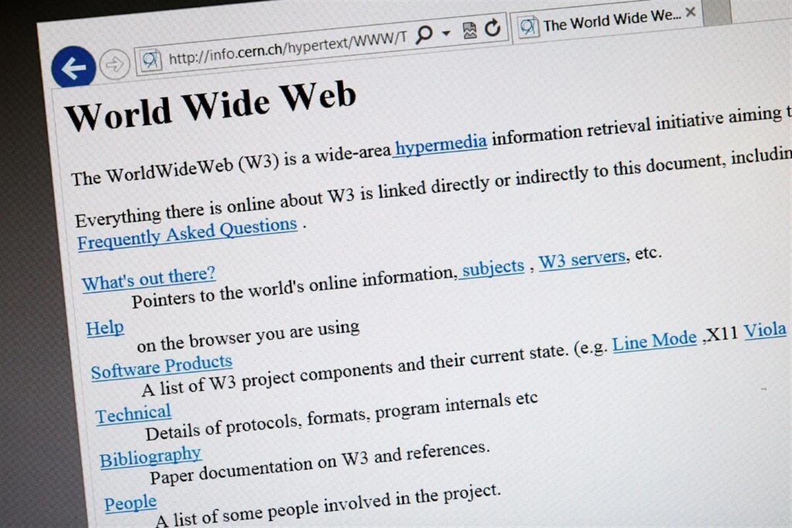

Tim Berners-Lee, at home in Oxfordshire, England, envisions a framework in which personal online data could be stored in a “pod” that the person controlled. Credit...Lola and Pani for The New York Times
Tim Berners-Lee, at home in Oxfordshire, England, envisions a framework in which personal online data could be stored in a “pod” that the person controlled. Credit...Lola and Pani for The New York Times
He Created the Web. Now He’s Out to Remake the Digital World.
Tim Berners-Lee wants to put people in control of their personal data. He has technology and a start-up pursuing that goal. Can he succeed?
By Steve Lohr
Jan. 10, 2021
Three decades ago, Tim Berners-Lee devised simple yet powerful standards for locating, linking and presenting multimedia documents online. He set them free into the world, unleashing the World Wide Web.
Others became internet billionaires, while Mr. Berners-Lee became the steward of the technical norms intended to help the web flourish as an egalitarian tool of connection and information sharing.
But now, Mr. Berners-Lee, 65, believes the online world has gone astray. Too much power and too much personal data, he says, reside with the tech giants like Google and Facebook — “silos” is the generic term he favors, instead of referring to the companies by name. Fueled by vast troves of data, he says, they have become surveillance platforms and gatekeepers of innovation.
Regulators have voiced similar complaints. The big tech companies are facing tougher privacy rules in Europe and some American states, led by California. Google and Facebook have been hit with antitrust suits.
But Mr. Berners-Lee is taking a different approach: His answer to the problem is technology that gives individuals more power.
The goal, he said, is to move toward “the web that I originally wanted.”
“Pods,” personal online data stores, are a key technical ingredient to achieve that goal. The idea is that each person could control his or her own data — websites visited, credit card purchases, workout routines, music streamed — in an individual data safe, typically a sliver of server space.
Companies could gain access to a person’s data, with permission, through a secure link for a specific task like processing a loan application or delivering a personalized ad. They could link to and use personal information selectively, but not store it.
Mr. Berners-Lee’s vision of personal data sovereignty stands in sharp contrast to the harvest-and-hoard model of the big tech companies. But it has some echoes of the original web formula — a set of technology standards that developers can use to write programs and that entrepreneurs and companies can use to build businesses. He began an open-source software project, Solid, and later founded a company, Inrupt, with John Bruce, a veteran of five previous start-ups, to kick-start adoption.
“This is about making markets,” said Mr. Berners-Lee, who is Inrupt’s chief technology officer.
Inrupt introduced in November its server software for enterprises and government agencies. And the start-up is getting a handful of pilot projects underway in earnest this year, including ones with Britain’s National Health Service and with the government of Flanders, the Dutch-speaking region of Belgium.
Inrupt’s initial business model is to charge licensing fees for its commercial software, which uses the Solid open-source technology but has enhanced security, management and developer tools. The Boston-based company has raised about $20 million in venture funding.
Start-ups, Mr. Berners-Lee noted, can play a crucial role in accelerating the adoption of a new technology. The web, he said, really took off after Netscape introduced web-browsing software and Red Hat brought Linux, the open-source operating system, into corporate data centers.

The world’s first web page as it appeared in 1992, a year after it was created. Mr. Berners-Lee is trying to pull the online world back toward its egalitarian roots. Credit...Fabrice Coffrini/Agence France-Presse — Getty ImagesOver the years, companies focused on protecting users’ privacy online have come and gone. The software of these “infomediaries” was often limited and clunky, appealing only to the most privacy conscious.
But the technology has become faster and smarter — and pressure on the big tech companies is mounting.
Tech companies have formed a Data Transfer Project, committing to make personal data they hold portable. It now comprises Google, Facebook, Apple, Microsoft and Twitter. The Federal Trade Commission recently held a “Data to Go” workshop.
“In this changed regulatory setting, there is a market opportunity for Tim Berners-Lee’s firm and others to offer individuals better ways to control their data,” said Peter Swire, a privacy expert at the Georgia Tech Scheller College of Business.
Inrupt is betting that trusted organizations will initially be the sponsors of pods. The pods are free for users. If the concept takes off, low-cost or free personal data services — similar to today’s email services — could emerge.
The National Health Service has been working with Inrupt on a pilot project for the care of dementia patients that moves from development into the field this month. The early goal is to give caregivers access to a broader view of patients’ health, needs and preferences.
Each patient has a Solid pod with an “All About Me” form with information submitted by the patient or an authorized relative, supplementing the person’s electronic health record. The pod might list that the patient needs help for daily tasks like getting out of bed, tying shoelaces or going to the bathroom. It might also include what soothes the patient when agitated — perhaps country music or classic old movies. Later, activity data from an Apple Watch or Fitbit could be added.
The medical goal, said Scott Watson, technical director on the pilot project, is improved health and better care that are less stressful for the patient. “And it’s a fundamental change in how we share information in health care systems,” he said.
The initial project will begin with up to 50 patients in the Manchester region and be evaluated in a few months.
In Flanders, a region of more than six million people, the government hopes the new data technology can nurture opportunities for local entrepreneurs and companies and new services for citizens. Personal data in pods can be linked with public and private data to create new applications, said Raf Buyle, an information architect for the Flanders government.
One potential app, Mr. Buyle said, might suggest routes and modes of travel for work commutes, once Covid-19 restrictions are lifted. Such an app, he said, could combine location data from a person’s smartphone, with preferences for exercise and reducing the carbon footprint, and weather and public transport schedules and bike or scooter rental pickup sites.
“Most of the cool use cases will come from companies building new apps on top of the data,” Mr. Buyle said.
As a young engineer at CERN outside Geneva, Mr. Berners-Lee developed the protocols for what would become the web as we know it.Credit...Fabrice Coffrini/Agence France-Presse — Getty Images
For Mr. Berners-Lee, the Solid-Inrupt venture is a fix-it project. He has spent his career championing information sharing, openness and personal empowerment online — as director of the World Wide Web Consortium, president of the Open Data Institute, and an academic at the Massachusetts Institute of Technology and Oxford University. His accolades include a Turing Award, often called the Nobel Prize of computer science. In his native England, he is a knight — Sir Tim.
“But Tim has become increasingly concerned as power in the digital world is weighted against the individual,” said Daniel Weitzner, a principal research scientist at the M.I.T. Computer Science and Artificial Intelligence Laboratory. “That shift is what Solid and Inrupt are meant to correct.”
The push to give individuals greater control over their data, Mr. Berners-Lee said, often begins as a privacy issue. But a new deal on data, he said, will require entrepreneurs, engineers and investors to see opportunities for new products and services, just as they did with the web.
The long view is a thriving decentralized marketplace, fueled by personal empowerment and collaboration, Mr. Berners-Lee said. “The end vision is very powerful,” he said.
Whether his team can realize that vision is uncertain. Some in the field of personal data say the Solid-Inrupt technology is too academic for mainstream developers. They also question whether the technology will achieve the speed and power needed to become a platform for future apps, like software assistants animated by a person’s data.
“No one will argue with the direction,” said Liam Broza, a founder of LifeScope, an open-source data project. “He’s on the right side of history. But is what he’s doing really going to work?”
Others say the Solid-Inrupt technology is only part of the answer. “There is lots of work outside Tim Berners-Lee’s project that will be vital to the vision,” said Kaliya Young, co-chair of the Internet Identity Workshop, whose members focus on digital identity.
Mr. Berners-Lee said that his team was not inventing its own identity system, and that anything that worked could plug into its technology.
Inrupt faces a series of technical challenges, but none that are “go-to-the-moon hard,” said Bruce Schneier, a well-known computer security and privacy expert, who has joined Inrupt as its chief of security architecture.
And Mr. Schneier is an optimist. “This technology could unlock an enormous amount of innovation,” potentially becoming a new platform as the iPhone was for smartphone apps, he said.
“I think this stands a good chance of changing how the internet works,” he said. “Oddly, Tim has done it before.”
Steve Lohr has covered technology, business and economics for The Times for more than 20 years. In 2013, he was part of the team awarded the Pulitzer Prize for Explanatory Reporting. He is the author of “Data-ism” and “Go To.” @SteveLohr
SOURCE: NEW YORK TIMES